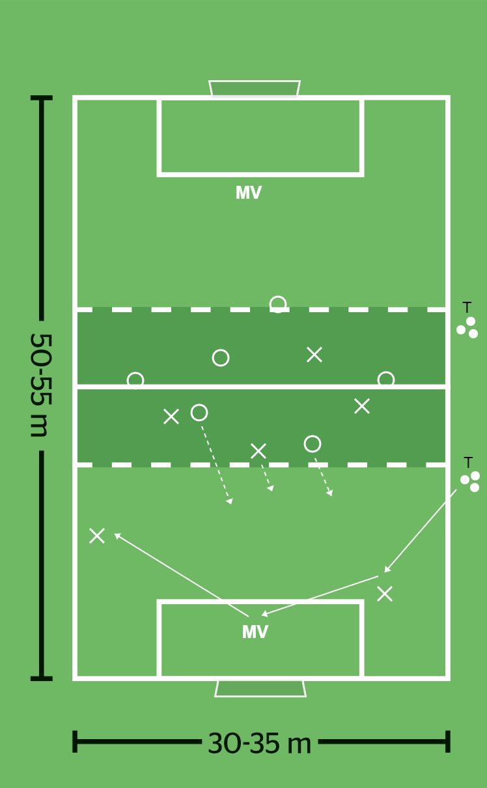

 ▶
▶
Speluppbyggnad
Behålla bollen inom laget.
Spelbarhet: Söka fri yta för att kunna ta emot en passning.
Speldjup: Göra så att bollhållaren kan spela bollen både framåt och bakåt.
Spelavstånd: Placera sig så att passningarna kan ha olika längd.
Spelbredd: Göra så att laget kan utnyttja planens bredd.
Spelvändning: Utnyttja ytan som motståndarna eventuellt lämnar på motsatt kant.
Uppflyttning: Göra så att kontakten med backarna upprätthålls.
Två målvakter, du som tränare, tolv utespelare; yta 45 x 28 meter med två mål; bollar, koner och västar.
Spel 7 mot 7.
När bollen varit utanför planens begränsningslinjer startar spelet med en passning från dig som tränare.
Lag X har då två utespelare och målvakt i den första tredjedelen och spelarna i lag O placerar sig bakom retreatlinjen.
Du som tränare passar bollen till en back i lag X som passar till målvakten samtidigt som lag O sätter press.
Därefter fritt spel.
Du som tränare ska uppmuntra det anfallande laget att
· använda målvakten i trånga situationer och undvika att spela ut bollen till inkast
· spela bollen från tredjedel till tredjedel, helst på marken
· hålla ihop laget (uppflyttning, inklusive målvakten).
Om bollen gå utanför planen startar spelet med passning till det andra laget från dig som tränare.